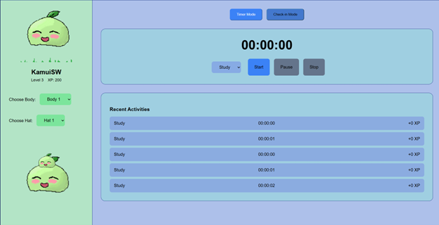

Dit verslag gaat over de verschillende onderdelen en stappen van het project Mochi. Het project is uitgevoerd in de periode van 6 mei tot en met 20 juni 2025. We willen graag de opdrachtgever bedanken voor de kans om aan dit project te werken. Ook willen we Pim de Graaf en Maarten Rommens bedanken voor hun begeleiding en waardevolle feedback, die hebben bijgedragen aan het tot stand komen van dit verslag.
Team 7: Xinxin Wang, Jivraj Singh, Jono Wink, Kevin Kang
Het bedrijf is ontstaan als een universiteitsproject, opgezet door een groep studenten die samenwerkte aan een opdracht binnen hun opleiding. De inspiratie voor het project kwam van één van de teamleden, die al een eigen systeem had ontwikkeld om zijn tijd beter te plannen en productiever te zijn. Hij merkte dat zijn aanpak echt hielp om structuur in zijn dagen te brengen, en dat bracht hem op het idee om hier een echte app van te maken.
Gedurende twee studiemodules werkten de studenten aan het bouwen van een eerste versie van het product – ook wel een MVP genoemd, dit staat voor Minimum Viable Product. Dat is eigenlijk een soort basisversie van een app, met precies genoeg functies om te kunnen testen of het idee werkt en of mensen het zouden gebruiken als het volledig uitgewerkt is.
Toen de mobiele app klaar was en redelijk goed functioneerde, realiseerden ze dat er ook een webapplicatie nodig was. Niet iedereen plant zijn dag graag via een telefoon, en met een webversie zouden ze een breder publiek kunnen aanspreken, zoals studenten die liever via hun laptop werken.
De belangrijkste eigenaar van het bedrijf is Matthijs Jansen. Hij is niet alleen ondernemer, maar ook student-assistent (TA) binnen de module waarin het project verder werd ontwikkeld. Omdat hij in die module veel studenten begeleidde, besloot hij om zijn eigen bedrijf, dat inmiddels de naam Mochi had gekregen, als officieel project in te brengen binnen de module. Zo kregen andere studenten de kans om verder te bouwen aan het idee, terwijl hij zelf ook de ontwikkeling van zijn bedrijf kon versnellen met hulp van betere ideeën en extra mensen om eraan te werken.
Het bedrijf is dus op een bijzondere manier ontstaan: het begon als een simpel idee van een student, groeide uit tot een schoolproject en werd daarna door één van de teamleden serieus opgepakt om er echt iets van te maken. Mochi is inmiddels veel meer dan alleen een schoolopdracht, het is een bedrijf in opbouw, met als doel om mensen te helpen beter te plannen, zich te focussen en hun doelen te halen.
We waren op zoek naar iemand met wat meer ervaring, vooral op het gebied van programmeren. Uiteindelijk kwamen we uit bij Yisu Zhou. Yisu is een student Electrical Engineering aan de TU Delft en zit nu in zijn tweede jaar. Hij weet ontzettend veel van wiskunde (vooral calculus), natuurkunde, en nog belangrijker voor ons: programmeren.
Hij heeft al best wat eigen projecten gedaan. Een van de tofste voorbeelden is een robot die zelf kan rijden en obstakels herkent, zonder dat iemand hem hoeft te besturen. Dat vonden wij erg indrukwekkend en het liet zien dat hij echt weet waar hij mee bezig is.
Tijdens ons project heeft Yisu ons hier en daar geholpen, bijvoorbeeld met het bouwen van functies in de front-end én in de back-end. Sommige dingen waren voor ons nog best lastig, omdat we daar zelf nog niet zoveel ervaring mee hadden. Dankzij zijn hulp konden we een aantal belangrijke onderdelen van de webapp werkend krijgen. Hij legde dingen rustig uit, dacht goed met ons mee, en hielp als we ergens vastliepen.
Zijn hulp heeft zeker een verschil gemaakt in de voortgang van ons project. Zonder hem waren we waarschijnlijk veel meer tijd kwijt geweest aan uitzoeken hoe alles werkte. We zijn dan ook erg dankbaar dat hij de tijd nam om ons te helpen.
Mochi is een studentenstart-up gerund door vier BIT (business and IT) + TCS (Technical computer science) -studenten. Hun doel is om stresspreventie en timemanagement te bieden via een schattige buddy-assistent voor studenten. Deze buddy heet Mochi en groeit op basis van je mentale toestand (bijv. of je gestrest bent of niet). Je kunt hem zien als een klein huisdier dat je overal mee naartoe kunt nemen en dat voor je zorgt. (Denk aan Pokémon in combinatie met your Study Advisor).
De applicatie zelf draait op telefoons of op een eigen, losstaand apparaat. Over het algemeen werkt de applicatie door bij te houden hoeveel je gedurende een dag studeert en/of werkt, en je vervolgens aan te raden passende pauzes te nemen. Deze pauzes zijn gebaseerd op onderzoek en helpen je op een bewezen en effectieve manier van stress af te komen.
Voor het project vragen ze ons om te richten op de timemanagementkant van Mochi. (In de vorm van een desktop webapplicatie). De meeste studenten hebben problemen met timemanagement ervaren, wat stress veroorzaakt tijdens examens en deadlines. Om dit op te lossen, zou Mochi een logger moeten gebruiken die de begin- en eindtijden bijhoudt van een specifieke activiteit (bijv. studeren, ontspannen of werken). Afhankelijk van de uitgevoerde activiteit biedt een game-achtig systeem gebruikers ervaring. Ervaring wordt opgebouwd in globale niveaus voor gebruikers, waardoor hun Mochi een 'level omhoog' gaat.
De logger is bedoeld om op twee manieren te werken:
1. Gebruikers kunnen een timer instellen. Zodra deze is gestopt, wordt de tijd die een gebruiker heeft besteed opgeslagen in een back-end database.
2. Daarnaast kunnen gebruikers 'inchecken' en 'uitchecken'. Zo kunnen gebruikers bijhouden wanneer ze een activiteit zijn begonnen en wanneer ze ermee zijn gestopt.
Tot slot zijn er twee extra functies waar gebruikers gebruik van kunnen maken. Beide passen binnen het thema van het gamified systeem. De eerste functie is een wereldwijd klassement, waar gebruikers de hoogstgeplaatste gebruikers kunnen zien op basis van hun niveau. Hier worden hun persoonlijke Mochis weergegeven. De tweede functie is een systeem gebaseerd op uitdagingen, waarbij een groep van (minimaal 2) gebruikers een gepersonaliseerd klassement kan samenstellen voor een specifieke periode (bijv. 4 dagen). Gebruikers kunnen in deze groepen ook doelen instellen, waarbij de eerste persoon die dat doel bereikt, wint (bijv. 10 uur studeren).
De front-end is het deel van een website of webapp dat gebruikers zien en gebruiken. Alles wat je op een webpagina kunt aanklikken, lezen of bekijken (bijvoorbeeld knoppen, teksten, kleuren, animaties) hoort bij de front-end. (Reporter, 2009)
Voor de front-end wisten we al van informatica dat we HTML en CSS moet gebruiken om de website te maken, maar in plaats van PHP (wat we in informatica hebben geleerd), gebruiken we javascript voor de samenwerking met onze back-end. Hier is ons onderzoek van waarom:
Met JavaScript kun je meer interactive elementen maken, zoals timers, grafieken en dynamische aanpassingen op de pagina zonder dat je steeds de hele pagina opnieuw moet laden. Dit is belangrijk voor ons project, omdat Mochi functies heeft zoals een timer, grafieken en nog veel meer. (JavaScript | MDN, 2025)
Daarnaast gebruiken veel moderne websites frameworks zoals React, Vue.js of Angular. Deze maken het makkelijker om grote webapplicaties te bouwen die verschillende pagina’s en functies hebben. Voor Mochi willen we bijvoorbeeld verschillende componenten maken zoals een dashboard, profielpagina, statistiekenpagina en instellingen. Frameworks helpen om deze onderdelen overzichtelijk te houden. (Quick Start – React, z.d.)
En als laatst zorgt JavaScript ervoor dat data opgehaald kan worden via API’s zonder dat de hele pagina ververst hoeft te worden. Dit geeft een snellere manier om data te verplaatsen, wat belangrijk is omdat Mochi constant gegevens zoals leertijd en statistieken moet updaten.
We gebruiken GITHUB om samen te werken, zodat we makkelijk alle code bij elkaar kunnen stoppen.
De back-end is het deel van een website of webapp dat niet zichtbaar is voor de gebruiker. Hier gebeuren alle processen achter de schermen, zoals:
1. Opslaan van data (gebruikersaccounts in een database)
2. Berekeningen uitvoeren
3. Regelen welke data naar de front-end gaat
Voor de back-end moesten we veel puzzelen over hoe en wat we moeten gebruiken. Een ding is duidelijk, we moeten namelijk net als ons Front-end, javascript gebruiken.
Maar om data op te slaan, hebben we een database nodig. De database konden we erg snel een taal voor vinden, namelijk SQL. SQL hebben wij ook geleerd in informatica, wat heel erg geholpen heeft tijdens dit project. (What Is SQL? - Structured Query Language (SQL) Explained - AWS, z.d.)
Maar om SQL te gebruiken, hebben we een server nodig waar iedereen bij kan heeft. We hebben veel gezocht hiervoor bij AWS (Amazon webservices), Google Cloud en Microsoft Azure, maar het heeft allemaal een probleem:
Het kost geld en is moeilijk te gebruiken. (What Is A Cloud Service? – Cloud Services Solutions - Citrix, z.d.)
Er is namelijk wel voor ieder van deze bedrijven een gratis versie, die ook goed genoeg is voor ons toepassing, maar omdat sommigen van ons vroeger ervaring had met deze techniek, hebben we uiteindelijk voor een andere manier gekozen:
Ons eigen server maken.
Dit was namelijk niet erg moeilijk. We moesten eerst Linux OS op een raspberry pi zetten, en daarna de volgende dingen installeren:
1. MySQL (voor de SQL-database)
2. PHPMyAdmin (laat SQL-database zien in een webapp)
3. Hamachi (een vpn service wat ons laat op de server te connecten)]
En als laatst moeten we uitzoeken hoe we onze database kunnen verbinden met onze javascript, en hiervoor konden we ook al snel antwoord voor vinden online.
Voor de taakverdeling hebben we naar onze talenten en belangen gekeken, en een Trello bord gemaakt met onze passende taken erin.
Het is ongeveer zo ingedeeld:
1. Jivraj Singh, hoofd back-end ontwikkelaar
2. Xinxin Wang, front/back-end en art ontwikkelaar
3. Jono Wink, styling/art ontwikkelaar
4. Kevin Kang, front/back-end ontwikkelaar
Ons eindproduct is een webapp, dat opgedeeld kan worden in vier fases.
In Fase 1 richten we ons op het bouwen van de initiale functies aan de front-end. Dit betekent dat we de belangrijkste interacties ontwerpen en programmeren, maar nog zonder koppeling met een database. In deze fase bouwen we de basis voor de volgende functies:
Naast de functies, hebben we natuurlijk een Mochi nodig. Dit is het karakter dat de gebruiker ziet en waarmee hij/zij kan interacteren. Voor onze Mochi gebruiken we pixel art. Hiervoor hebben we Pixilart.com gebruikt. Dit is een gratis online tool waarmee je pixeltekeningen kunt maken en opslaan als afbeeldingen of sprite sheets. Het programma werkt handig in de browser en biedt functies zoals lagen, rasters en animatieframes, waardoor we onze Mochi in verschillende animaties of met verschillende accessoires kunnen tekenen.
Wij hebben ons design voor de Mochi gebaseerd op de voorbeelden die wij hebben gekregen van ons opdrachtgever. Ook hebben wij onderzoek gedaan online naar vergelijkbare tekeningen en afbeeldingen.
We hebben ervoor gekozen om ook na te maken hoe een Mochi in het echt eruit ziet, want een Mochi is namelijk een soort eten. Daar hebben wij deze afbeelding gebruikt:
Wij hebben uiteindelijk Mochi’s gemaakt in pixel art zoals erboven al werd gezegd, Hier onder is dus onze pixel art voor de Mochi:
Figuur 1 Mochi
Figuur 3 animatie van Mochi Figuur 4 Homepagina design
Voor onze UI (User interface) hebben we een minimalistische stijl gekozen, met kleuren dat meewerken met kleurentheorie. Om passende kleuren te kiezen voor onze webapplicatie hebben wij als eerste gekeken naar het algemene thema voor het project, vervolgens hebben wij hieruit gehaald dat de kleuren die het beste bij dit thema passen, zachte pastelkleuren zijn. Om contrast te creëren gebruiken wij lichte-blauw en groene pastelkleuren met donkere tekst. Wij zijn hierop gekomen omdat het Mochi eten vaak groen is en om de taakbalk van de website duidelijk een andere kleur dan de hoofdkleur te geven is deze blauw. Ook is in Figuur 3 een korte animatie van de Mochi te zien die wij gemaakt hebben met pixilart waarbij de gebruiker verschillende stijlen zou kunnen kiezen bij de volledig uitgewerkte versie.
Figuur 2 Mochi muis
Omdat onze database geen onlineservice is, moesten we alles helemaal vanaf nul opzetten. Gelukkig zijn de stappen hiervoor niet super ingewikkeld. Eerst installeerden we het besturingssysteem Raspberry Pi OS. Dat is het systeem waarop onze Raspberry Pi draait, een soort minicomputer die we gebruiken als server.
Daarna installeerden we MySQL, het systeem waarmee we onze database beheren. Maar om de database makkelijk te kunnen gebruiken en beheren, hebben we ook Apache en phpMyAdmin nodig. Apache is een programma dat ervoor zorgt dat we een webpagina kunnen hosten op onze server. PhpMyAdmin is dan een soort controlepaneel waarmee wij via een website de database kunnen bekijken en aanpassen. In plaats van allemaal moeilijke code te typen, kunnen wij met klikken en invulvelden gewoon tabellen maken, data aanpassen of iets verwijderen.
Maar er zat wel een probleem aan, namelijk dat normaal we alleen verbinding kunnen maken met MySQL als we op hetzelfde netwerk zitten als de server. Dat betekent dat we niet zomaar vanaf een andere plek dan de server, zoals thuis, erbij zoude kunnen. En omdat ons team vaak op verschillende locaties werkt, moesten we daar een oplossing voor bedenken.
Die oplossing was Hamachi. Hamachi is een programma dat een virtueel netwerk maakt, een soort nep-wifi-netwerk via internet. Daardoor lijkt het alsof alle teamleden op hetzelfde lokale netwerk zitten, ook al zitten we in werkelijkheid allemaal ergens anders. Zo konden we toch allemaal verbinding maken met dezelfde server en tegelijk aan de database werken. Zonder Hamachi was dat eigenlijk bijna niet te doen.
Aan het eind konden we alles samenvoegen, en zo ontstond ons uiteindelijke eindproduct. We hebben de volgende functies:
Al ons code staat op github.
https://github.com/KamuiSW/Project-Mochi